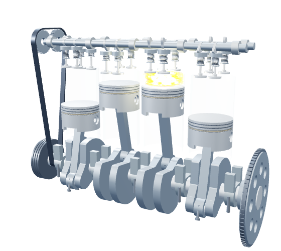
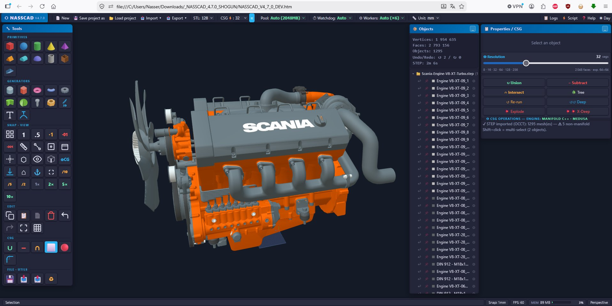
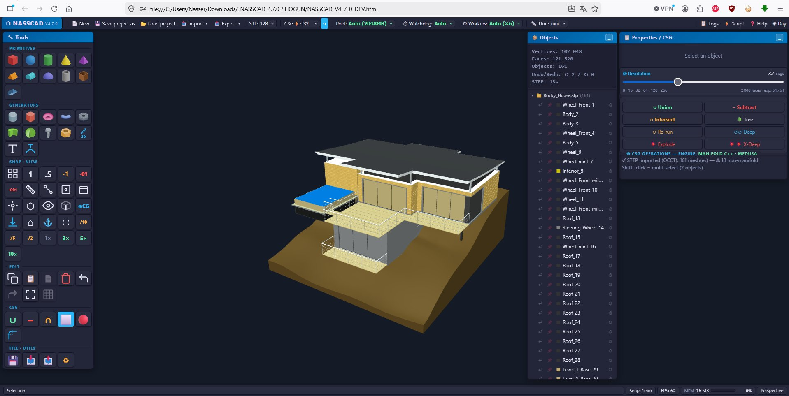

Windows download
Download NASSCAD 4.7.0 for Windows x64. Choose Setup or Portable with MEDUSA included, local file dialogs, offline modelling and no account.
CAD IN YOUR BROWSER AND ON WINDOWS
Free 3D CAD with local model processing and no account required. Create mechanical parts and export STL or 3MF for 3D printing. View and inspect STEP assemblies and IFC building models, with available names, colours and annotations.
Choose your edition: launch in your browser with no installation, or get the Windows x64 All-in-One pack — Setup or Portable to work offline with MEDUSA already included. Both desktop editions start and stop the native engine automatically. Browser users can still run the optional standalone MEDUSA engine.
Build 3D scenes with an AI assistant and NassScript. Give a language model the script reference, review its JavaScript, then run it in NASSCAD. See the four-cylinder engine →

Built with NassScript · Animated in your browserDRAG TO ORBIT · FOUR-STROKE VISUALIZATION · 1–3–4–2
A 3D parametric CAD application with an HTML entry point and companion JavaScript and WebAssembly files. No account or installation required. Model processing runs locally; install the Windows desktop edition for offline use.
Designed for people who actually build things — FDM printing, CNC, mechanical assembly. Every primitive, every export format, every workflow decision was made to get from idea to slicer fast.
NassScript exposes every internal function via an integrated JS console. Automate complex geometries, create procedural parts, chain boolean operations — all in the same window as your model.
The Windows All-in-One pack brings NASSCAD and MEDUSA together in an Electron desktop application. Choose the Setup installer or the Portable executable; both include JavaScript, WebAssembly and runtime DLLs, and work offline on your computer.
Setup uses an English installer, defaults to all users of this computer, and lets you choose the installation folder and shortcuts. All-user installation requires administrator approval. Prefer no installation? Download Portable and open its executable directly.
Launch NASSCAD. MEDUSA starts automatically as a separate native process managed by the application. Its status and colored log are accessible inside NASSCAD. There is no BAT launcher and no separate engine to start.
NASSCAD communicates with its bundled MEDUSA through an internal pipe, without a local HTTP server. Use the native file dialogs to open and save your work. When you close NASSCAD, its MEDUSA process stops automatically.
Windows x64 · NASSCAD 4.7.0 · All-in-One · MEDUSA and dependencies included · No account required.
Setup installs NASSCAD. Portable runs without installation. Both manage MEDUSA automatically.
The browser edition remains available above. The standalone MEDUSA download below is intended for browser users.
Download the Windows edition, prepare a printable part, or inspect a received assembly or building model.
Download NASSCAD 4.7.0 for Windows x64. Choose Setup or Portable with MEDUSA included, local file dialogs, offline modelling and no account.
Create a dimensioned mounting block with a through-hole in NASSCAD, save its editable project and export STL or 3MF for your 3D printer slicer.
View and inspect STEP assemblies in NASSCAD. Open AP203, AP214 and AP242 files, examine available parts, colours and PMI, and understand the export limits.
View IFC building models locally in NASSCAD. Inspect supported IFC2X3, IFC4 and IFC4X3 geometry, available names and colours, and the limits of IFC export.
OpenCASCADE and MEDUSA load STEP assemblies for viewing and inspection, with available colours, hierarchy and PMI. Native parallel processing handles large models. Imported bodies may remain open; keep the source file.
Multi-body assemblies — names, positions, part and face colors, PMI / GD&T. Thousands of solids: native parallel import with MEDUSA, OpenCASCADE WASM in the browser otherwise.
MEDUSA can reuse available referenced source B-Rep. Missing source data or unsupported transformations can require tessellation. Export does not guarantee repair, a closed solid or full preservation of CAD semantics.
Keep the original STEP and inspect exported files in the receiving CAD tool. Check dimensions, body count, colours and whether each body is recognised as a closed solid.
OCCT compiled to WebAssembly inside the page, and OCCT 8 native inside MEDUSA — the kernel behind FreeCAD, in your browser and on your CPU.
View an architect's IFC file next to your mechanical parts. IFC4 export remains available for geometry exchange; imported IFC is a viewer workflow, with no guarantee of full BIM round-trip preservation.
Supported building geometry becomes scene objects with available IFC names, colours and positions. The web-ifc engine processes model data locally. The result is an inspection scene, not an editable authoring model with all BIM relationships preserved.
With the Project › Site › Building › Storey structure strict BIM software expects. Colours are kept face by face.
Cubes, cylinders, tubes, hollow boxes, spheres and cones are written as real IFC solids; everything else as triangulated surfaces.
Parametric modeling, boolean operations, advanced generators and memory management — in a browser application you can download as a complete offline package.
Union, subtraction, intersection — powered by Manifold, the open-source C++ CSG kernel developed at Google. It runs right in the browser, compiled to WebAssembly, and switches by itself to the MEDUSA companion engine when it is running — native, multi-threaded with Intel TBB, much faster on big models. Every boolean is logged in a re-runnable CSG tree.
ISO involute gears & V-groove pulleys (Gear.Gen), hollow curved pipes with Bishop-frame path (Pipe.Gen), parametric screws ISO 68-1 / UNC·UNF (Screw.Gen), parametric nuts ISO 4032/4033 · ASME B18.2.2 (Nut.Gen), ultra-HD torii, chamfered/rounded cubes, solids of revolution, spherical sectors, threaded fasteners.
A 2 GB ArrayBuffer with a custom mark-and-sweep garbage collector handles all geometry and scene snapshots. BVH/AABB caching on every mesh keeps raycasting fast on complex scenes.
Solid/Hole mode per object for automatic boolean detection. Box-select for bulk ops. Live XYZ transform. Dimension annotations in 3D viewport. Project save/load as JSON. Hide any panel you don't need — or all of them with H — and the model gets the whole screen.
STL export uses 128 segments by default — optimized for FDM. Quality slider goes higher for SLA or CNC. Hard-dimensions approach: what you model is what you export, 1:1, no scale surprises. Export the whole design or only the selected shapes, in every format.
File picker or drag-and-drop import. Imported meshes are first-class objects — boolean-combinable with native primitives, transformable, and re-exportable into any assembly.
View and inspect STEP AP203 / AP214 / AP242 assemblies and IFC2X3 / IFC4 / IFC4X3 geometry. Available names, colours and annotations aid inspection. STEP and IFC4 export options remain available; verify the output and retain the source files.
True B-Rep fillet and chamfer computed by OpenCASCADE, on picked edges or on all edges at once — not a mesh approximation.
Your printer's bed and build volume on the grid — Bambu Lab, Creality, Prusa, Elegoo, Anycubic, Voron, Sovol. A wall turns red when the part sticks out.
Core primitives are one click. Advanced generators open a live-preview modal with sliders. 19 watertight primitives total.
NassScript is the bridge between a language model and NASSCAD's live 3D scene. An AI assistant can draft the geometry and motion; you review the code and run it locally. The four-cylinder engine below shows what this programmable workflow can build.
Your idea. An AI assistant. NassScript. NASSCAD.
Share the NassScript reference with your assistant, describe what you want to create, then paste and run the generated JavaScript in NASSCAD. Refine the script as your idea evolves.
The potential goes well beyond a single modelling command. An AI assistant can help combine many tools into a coherent program, define relationships between parts and write the logic that brings a scene to life. Ask for a different dimension, a new mechanism or revised motion, then iterate on the script. NASSCAD provides the modelling tools and execution; NassScript connects them into a programmable workflow.

A complete mechanism built and animated with NassScript: pistons, connecting rods, crankshaft, camshafts, timing belt and combustion effects.
Explore the demo & script →
A date-driven Solar System with planets, moons, orbital trails and interactive playback controls, built and animated with NassScript.
Explore the demo & script →Both demos are also available from the NassScript demo button on the NASSCAD welcome screen.
Real STEP AP242 assemblies, imported straight into a browser tab — thousands of solids, source colors, full assembly tree.




The assemblies above are third-party CAD models, shown to demonstrate STEP import — they are not NASSCAD content and remain the property of their authors:
Modern Cruise Ship Evita and Rocky House by Christian Spreafico · Scania R620 V8 8x4 and Scania V8 XT Turbo Engine by Ivo Jardim.
All four are published on the GrabCAD Community Library and redistributed as STEP test data by STEP Tools, Inc. No model file is bundled with NASSCAD or hosted on this site.
NASSCAD Desktop already includes MEDUSA; no separate download is needed. For the browser edition, import, model, combine, measure and export with nothing installed — booleans included, with Manifold compiled to WebAssembly. MEDUSA is the optional companion engine: the same Manifold in native C++ with Intel TBB, on every CPU core, for large booleans. It also imports large STEP assemblies in parallel and can reuse available source B-Rep on export. Imported STEP and IFC remain viewer/inspection workflows. The Windows ZIP contains the standalone engine, its required runtime files and the AGPL license and source information. Keep the supplied files together. Start the engine once and NASSCAD switches to it on its own.
Download and unzip — anywhere you like.
Keep Nasscad_Medusa_Engine_3.1.exe and the supplied runtime files together. The ZIP also includes the full license and a link to the corresponding source.
Run the engine — double-click Nasscad_Medusa_Engine_3.1.exe and leave it running while you use NASSCAD.
It is not code-signed: SmartScreen shows a warning,
click More info → Run anyway.
Open NASSCAD — from this site or your own copy.
The CSG panel then reads
ENGINE: MANIFOLD C++ · MEDUSA
instead of MANIFOLD WASM: booleans run natively.
Schools — secondary, technical and vocational — their teachers and their students, public or private, can use, install, share and adapt NASSCAD free of charge, in class, at home and in paid training. The same goes for apprenticeship and training centres, associations, FabLabs, makerspaces and libraries. No registration, no license request, nothing to sign.
Open NASSCAD in any modern browser on the school computers — no account for pupils, no server to run, nothing uploaded. Teach 3D design, STEP, CSG and scripting with the same tool — booleans included, even on locked computers where nothing can be installed.
Install NASSCAD Desktop, with MEDUSA included, on each Windows x64 machine. Share it with students so they can work at home, and adapt it to your courses.
The models and files students and teachers create with NASSCAD belong to them. Using NASSCAD does not by itself place their original designs under the AGPL. Read the AGPLv3 license.
NASSCAD is free for education, personal work and commercial use under AGPLv3. Modification and redistribution, including paid distribution, are allowed under its source-sharing conditions.
Nine export formats. Seven import formats. Check units and dimensions in the receiving tool. Section cuts for laser and CNC direct from the viewport. Export the whole design, or only the shapes you selected.
Binary — Cura, PrusaSlicer,
Bambu, Simplify3D
ASCII — Human-readable,
text-based format
Wavefront — Blender,
MeshLab, most 3D tools
3MF — Bambu Studio,
PrusaSlicer, full metadata
Binary GLTF 2.0 — Sketchfab,
Blender, AR/VR, web 3D
Stanford PLY — MeshLab,
CloudCompare, scan tools
SVG + DXF — 2D cut at any Y plane.
Laser cutters, CNC, LibreCAD
AP203 · AP214 · AP242 — FreeCAD, Fusion 360,
Autodesk Viewer
native OpenCASCADE writer in MEDUSA
IFC4 — BIM — Project › Site › Building › Storey,
parametric solids, colors per face
A CAD application that runs in your browser and exports parts straight to your printer or CNC.
The tool gets out of the way. You build.
Two complementary guides: learn the NASSCAD interface, or automate your work with NassScript. Both are in English.
An extensive illustrated guide to the graphical interface: selection and the double-click cycle, dimensions, primitives, generators, sketching, boolean operations, fillets, STEP and IFC, project files, exports and MEDUSA.
Includes Windows Setup and Portable instructions, the Performances menu, worked examples, keyboard and mouse controls, and troubleshooting. Read online with chapter search and Day / Night mode, or download the PDF for offline reading.
The dedicated guide to scripting and automation: application access, modelling commands, transformations, scene control and JavaScript workflows.
Explore the original four-cylinder engine and real-date Solar System demonstrations, then use the reference to develop your own scripts, including with an AI assistant.
NASSCAD was created to make practical 3D CAD accessible directly in a browser: create mechanical parts, work with STEP assemblies, prepare models for fabrication, and automate modelling with NassScript.
It was never intended to replace or outperform the major players in the CAD industry. It occupies its own place: a free CAD tool with direct access to its tools, local model processing, and an optional native companion engine.
Its dense interface is a deliberate choice. Frequently used tools remain visible and immediately accessible. The integrated help and interactive tutorial guide new users through that interface.
Need to choose an edition or check compatibility? Read the NASSCAD FAQ: browser vs Windows, formats, local processing and licensing.